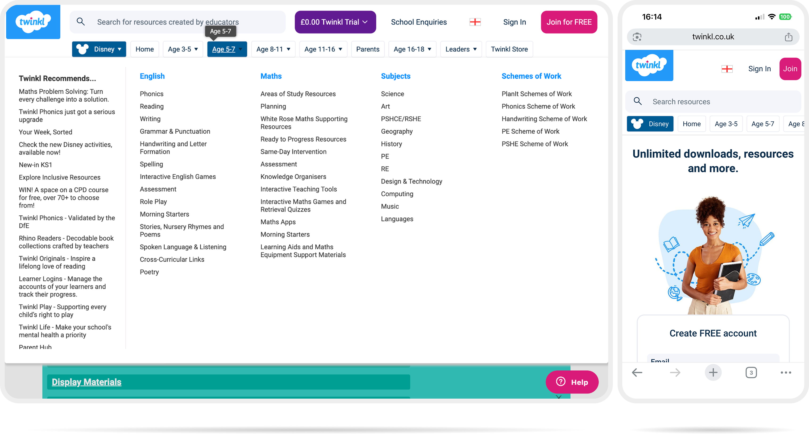

21 May 2026
How do you navigate 1.5 million resources in a single nav bar?
Twinkl currently offers over 1.5 million educational resources spanning different types, age groups, learning years, subjects and more. The top navigation bar is the primary entry point for discovery, yet the sheer breadth of the catalogue makes it near-impossible to create a single, simple structure that works for everyone. This project aims to redesign the nav bar to balance Twinkl's vast resource diversity with a manageable, easy, and reliable user experience.
A narrated walkthrough covering how I approached the brief, the key design decisions made along the way, and how I'd measure success. Approximately 5 minutes.
1.5M+
Educational resources available on Twinkl, spanning a wide range of types, formats and subjects.
4+
Key dimensions users navigate by: resource type, subject, age group, and learning year.
1
Navigation bar expected to surface all of it: the central design challenge of this project.
Vast resource diversity
With over 1.5 million resources of very different types, no single category structure can neatly contain everything Twinkl offers.
Multi-dimensional browsing
Users navigate by subject, age group, learning year, resource type and more, across multiple overlapping dimensions that resist a flat hierarchy.
One nav to rule them all
The top nav bar must serve the full breadth of Twinkl's audience without becoming overwhelming or unreliable as a wayfinding tool.
The project brief as set out for this redesign challenge.

The original brief suggested approximately 2 hours. In practice, delivering a fully researched, tested, and documented redesign took closer to 6.5 hours — reflecting a more thorough approach across every phase of the process.
Brief suggested
~2 hrs
Actual time
~6.5 hrs
Understand
40 mins
Read the brief
10 mins
Explore existing site
30 mins
Research
1 hr 45 mins
User research sessions
1 hr
Wireframe usability testing
45 mins
Design
2 hrs
Basic design system
30 mins
Wireframes
30 mins
Hi-fidelity prototype
1 hr
Deliver
2 hrs 10 mins
Presentation
10 mins
Video walkthrough
1 hr
Case study documentation
1 hr
Total
6 hrs 35 mins